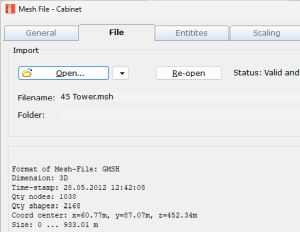

Mesh-File-Tags
| Home |
See also
| Mesh-Files | Over view about mesh-files. |
| Mesh-File-GMSH | Details on the use of external FE meshing tool. |
| Mesh-File-Simple | Details on the use of external meshes. |
| Mesh-File object | Object hosting all mesh-elements of a file (see General). |
| Elements (Mesh-File) | BEM-component using mesh-file elements (see BEM-Part). |
| Fields (Mesh-File) | Field using mesh-file elements (see Observation-Part). |
| Positioning | Mesh-file elements can specify position of a component. |
| Tag Picking Tool | (see below) |
| Updating the Mesh-File | (see below) |
Tags are used to distribute mesh-file elements of object General/Mesh-File to sections Elements and Fields.

When we work with imported geometry for boundary conditions or for the specification
of field planes of observation, we typically have to deal with many elements, most of
them triangles.
Firstly, we import the mesh using the
Mesh-File object. At this stage
often we may leave the mesh as it is. However, sometimes, it is useful to hide
certain elements in order to simplify the selection-process of the next step.
Secondly, we want to distribute clusters of mesh-elements to various
Subdomains, Interfaces or Fields.
Available Tags
On importing the mesh-file all elements get automatically tagged.
Each element can carry multiple tags. The set of available tags depend on the type
of mesh-file. For example, GMSH attaches tags to drawing groups. The tag is a unique
integer number which we call Elementary Tags.
You can also provide so-called Physical Groups in GMSH, which are are used to
give a name to a drawing group.
Other CAD applications provide Physical Tags with the help of the name of drawing groups.
All imports get tagged with a running Index number starting at one.
Additionally, AKABAK tries to identify groups and distributes tags on these groups.
Elements of the AKABAK tag-group are typically positioned side-by-side and of identical normal.
This tag-group is called Akabak Tags. For example, a primitive mesh-file is the
stl-format, which consists only of coordinates of triangles. There is no meta-data providing
further information. This file-format is supported by all CAD-tools because its use
for 3D-printing. If you import elements in stl-format you would have available only two
groups of Tags: Index Tags and Akabak Tags.

In the above example, from the CAD drawing of a horn a surface mesh was generated with the help of the software GMSH. This mesh generator is good in automatically grouping mesh-elements to clusters. Each such cluster gets assigned a unique number. This number is called Tag, or in the jargon of GMSH, a tag of the Elementary Group. In AKABAK we make use of these Tags in order to distribute mesh-elements and to adjust the normals. In our example there is a Subdomain of the horn which needs mesh-elements of its wall-boundaries. Hence, from all available Tags we only need to specify Tag=4 with property "Include". This yields that all mesh-elements are filtered but those which carry the Tag=4. Alternatively we could specify the special Tag-filter "All" and specify other Tags in order to exclude them. There are usually several ways of specification.
Tag Picking Tool
All forms which are related to mesh-files provide a Tag Picking Tool. You find it on page Drawing/Tags. The Tag Picking Tool helps in the specification of Tags. A "specified" plane will be available to the system, otherwise it would be hidden and not accessible for further operation.

There are mainly two list-boxes. On the left hand side we have a list of all Tags
available. Available means, these Tags are those provided by the CAD or meshing-tool
as well as those provided by AKABAK during import.
The left-list displays all Tags which are not yet specified. Not specified means
that its elements are not used in subsequent simulations.
The list-box on the right displays Tags which have been
specified explicitly. Specified Tags can have one of three properties:
- (+) Include - associated elements are used in subsequent calculations.
- (-) Exclude - associated elements are explicitly removed from set.
- (+s) Include - associated element planes get normals swapped.
Buttons and popup-menus help in moving forth and back Tag entries or to control their properties. You can select multiple list-entries. Specifying means to move a list-item from the list on the left to the list on the right hand side.
Filter of list-box is a popup-list between the list-boxes. It provides a filter for the tag-list-boxes. Its selection has no effect on subsequent calculations. It conveniently helps the selection process by hiding groups of Tags.
Display of 3D Viewer (at the top) provides control of the visualization.
- Not specified displays only elements which have not yet been specified, i.e.
which own Tags as listed in the list-box on the left hand side. - Show all displays always all elements regardless of specification.
- Specified displays only elements which have been specified with property Included.
Notes
The tag ALL is special and always available. If you specify it then all elements are considered to be included. ALL is a quick way to specify. Further, it can also be used in connection with excluding certain elements.
Sometimes you may want to address not groups of elements but only a single element. For example, to exclude it or to swap its normal. This can be done with the help of Tag Index. Go to the popup-list Filter of list-box and select Index. The two list-boxes will now display only Tags of type Index which addresses the individual element. The specification works in the same way as with the other Tags.
The Tag-specification and the associated rendering of the elements in the 3D viewer takes processing time. For swift processing the mesh-file should have no more than 5000 elements (approx for a modern computer). If the processing becomes slow consider to split the mesh-file into several individual files.
Tag-Filters are the back-bone of the mesh-file import specification. For each entry in the list-box of specified tags there will be instigated a record into a database of Tag-Filters. This database gets stored along with the component. It workings are in the back-ground.
Updating the Mesh-File
 |
Updating the mesh-file is, of course, a common task. Either we modify the CAD-drawing
or the parameters of the external mesh generator. In either case we will have to re-import
a new data-set of elements. Depending on the external software, already specified Tags
may be maintained, partially maintained or completely different.
On re-loading the mesh-file the current specified set of Tag-Filters is kept in memory
and will be applied initially. Most often the previous Tag-Filters still fit well to
the Tags of the new mesh-file and only few modifications need to be done.
If the file-name of the new mesh-file to be imported is different you will get a message
asking you whether to keep current Tag-Filters or to start from scratch.